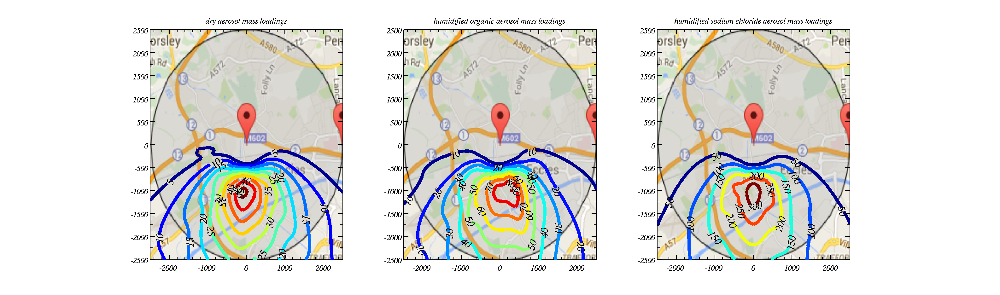

Gaussian Plume Model in MATLAB / Python
- Overview
-
This page describes a Gaussian Plume Models in both MATLAB and Python. Gaussian plume models are used heavily in air quality modelling and environmental consultancy. The model can be used to illustrate the following phenomena:
- Effect of wind fluctuations / speed on pollutant concentrations
- Effect of vertical stability on mixing and concentrations at the ground
- Effects of multiple stacks emitting pollutants
- Demonstration of an annual cycle in stability on concentrations at the ground
- The effect of humidity on particulate matter
- The effect of aerosol chemistry on particulate matter
- Short and long term excedences.
More info...The governing equations describing the movement of pollutants in the atmosphere is the advection-diffusion equation: \[ \frac{\partial C}{\partial t} + \frac{\partial uC}{\partial x}+ \frac{\partial vC}{\partial y}+ \frac{\partial wC}{\partial z}= K_x\frac{\partial ^2 C}{\partial x^2}+K_y\frac{\partial ^2 C}{\partial y^2}+K_z\frac{\partial ^2 C}{\partial z^2} \] Here, \(u,v,w\) are the 3 components of the wind; \(x,y,z\) are directions in 3-d space; \(C\) is the concentration of pollutant; \(K_x,K_y,K_z\) are eddy diffusivities that are used to describe the effects of turbulence in smearing out the pollutant.
By making the assumption that the flow is steady and that the advective term along wind is much greater than the eddy diffusion along wind there is an analytical solution: the so called gaussian plume model solution, which is described by the following equation: \[ C(x,y,z)=\frac{Q}{2\pi u \sigma _y \sigma _z}\exp\left(-\frac{y^2}{2\sigma _y^2} \right)\left[\exp\left(-\frac{(z-H)^2}{2\sigma _z^2}\right) +\exp\left(-\frac{(z+H)^2}{2\sigma _z^2} \right) \right] \] Here, \(Q\) is the mass emitted from the stack per unit time and \(H\) is the height of the stack. The \(\sigma\) values depend on the eddy diffusivities in a complex way. - Instructions
-
Download the files for either MATLAB or Python to a directory on your computer. They should all be downloaded to your working directory.
-
MATLAB Files: Python Files: - Examples
-

Above shows how vertical stability in the atmosphere alters the dispersion of the pollutant (the stack is 50 m high and centred on \(y=0\)).

The above shows overlays of the model field onto a map. Different assumptions are made to calculate the particulate matter loading in the air.
- Gaussian Plume Model
- The Gaussian Plume Model does not explicitly model the turbulent motions that are responsible for smearing the pollutant out, it only models the effects that turbulence would have via the eddy diffusivity term. In order to consider turbulent motions we must consider the dynamics of the fluid flow.
- Running the model
-
You should have downloaded the files to your working directory. This exercise guides you through setting up and running the model for different scenarios. We will consider:
- Differing wind fluctuations
- Vertical stability of the atmosphere
- Multiple stacks emitting pollutants
- An annual cycle in vertical stability
- The effect of humidity on particulate matter
- The effect of aerosol chemistry on particulate matter